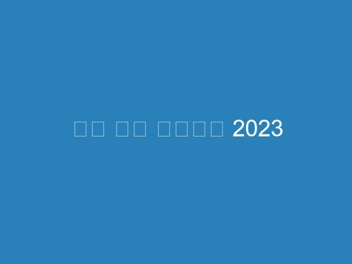

구글 어스 다운로드 2023
한 때, Google Earth Pro는 엄청 비쌌다. 하지만 구글은 지난 몇 년 동안 무료로 이 프로그램을 제공하고 있다. Google 어스 프로 …전 지구의 위성 이미지와 3D 지형, 전 세계 수백 개 도시의 3D 빌딩으로 세상을 위에서 내려다 보세요. 내 집이나 원하는 위치를 확대한 후 스트리트 뷰에서 360° 보기 …구글 어스 – Google Earth 7.3.4.8642 무료 다운로드. 최신 버젼의 구글 어스 – Google Earth. 거시적 & 미시적 부분에서 지구를 보여주는 3D 렌더링 애플리케이션 …스토리 및 지도 만들기. With creation tools, you can draw on the map, add your photos and videos, customize your view, and share and collaborate with others.Chrome용 Google 어스를 사용하면 브라우저에서 몇 초 만에 원하는 곳으로 날아가 수백 개의 도시를 3D로 감상할 수 있습니다. 주사위를 굴려 새로운 장소를 발견하고, …Google Earth을 위한 Android의 APK를 무료로 다운로드하세요. … Google Earth는 구글의 가장 야심찬 개발 제품에 속합니다. … 최신 버전. 9.162.0.2. 23 5월 2023.Google 어스 9.162.0.2 업데이트. 2023-06-03. 이제 개선된 검색 환경에서 위치, 추천 관심 장소, 데이터 영역, Voyager의 둘러보기를 이용할 수 있습니다.Google LLC에 의해 개발 된 Android Application Google 어스는 카테고리 여행 및 지역7에 나열되어 있습니다. 현재 버전은 9.162.0.2으로, 23/05/2023 에 출시 …Android 기기에서 Google Play 스토어 앱 Google Play 을 엽니다. · 오른쪽 상단에서 프로필 아이콘을 탭합니다. · 설정 다음 일반 다음 계정 및 기기 환경설정 · 계정을 추가 …SJY Bulletin – 7/10/2023. Friday, July 22, 2023. 스케치업 포디움 다운로드 Download The Asdal Chronicles 3 아이폰 구글어스 다운로드 patient icon toad sybase …구글 어스 다운로드. 최신버전: v1.3.36; 업데이트: 2023년 11월 02일; OS: Windows, macOS, Android, iOS; 파일: GoogleEarthProSetup.exe (1.36MB) …Android 용 Google 어스 APK를 다운로드합니다. Google 어스 앱의 최신 버전을 무료로 설치하세요. 전 지구의 위성 이미지와 3D 지형, 전 세계 수백 개 도시의 3D 빌딩 …Oct 5, 2023 — 2023년 3월 초, 드디어 구글 어스에 도로와 장소, 지하철 등 여러 데이터가 … 이곳에서는 구글 어스 다운로드가 가능한데, 어느정도 시간이 지나면 …Download Google Earth and enjoy it on your iPhone, iPad, and iPod touch. … look like on my iPhone even if the image shows 2023 I know it is an older image …다운로드: Google 어스 APK (App) – Earth APK – ✓ 최신 버전: 9.162.0.2 – Updated: 2023 – com.google.earth – Google LLC – 무료를 – Android용 Mobile App.Google 어스는 전세계 스테로이드지도입니다. … Google Earth Basics Tutorial (십일월 2023) … 다운로드하지 않고 Google 어스를 사용할 수 있습니다.Mac 용 Google Earth, 무료 및 안전한 다운로드. … 실제로 무료 버전과 동일하게 Google 어스 프로는 전 세계의 위치를 표시하므로 전체 행성의 … 2023. 9. 23.구글 어스 수강생이 배우는 다른 주제. Google 어스 엔진 · 원격 감지 · GPS · 지도 제작 · ArcGIS · HEC-RAS · 지질학 · PostGIS · 지질 모델링.Aug 12, 2015 — 2023 스케치업 3D베이스캠프 in 벤쿠버 (SketchUp 3D Basecamp). 2023. 8. … 구글어스를 다운받아서 설치하세요. 구글어스 다운로드 링크 바로가기.Google 어스 [HACK_MOD]. 손가락으로 스와이프하며 새로운 시선을 경험해 보세요.. Google 어스 Mod v기기에 따라 다릅니다. 업데이트: 04/11/2023. 비용: 무료로.Grab the helm and go on an adventure in Google Earth.Oct 18, 2023 — 우리 중: Android 또는 PC용 최신 업데이트 버전 다운로드. 마르시알 트리게로 10월 18, 2023 태그 : 구글 플레이. 20년 10월 2023일 오후 22시 15분 …osb114.com; 프로그램 / 소프트웨어; 2023. 3. 30. 23:26. 구글 어스 프로 다운. 구글어스는 구글에서 제공하는 지도 프로그램입니다. 전 세계에 있는 모습을 위성 …같은 사용 하기 쉬운 기능 및 Google 어스 및 비즈니스 사용자를 위해 특별히 설계 된 추가 … Google Earth Pro의 최신 버전은 2023-10-27에 발표 된 7.3.6.9264.구글 어스 프로그램은 지구촌 대부분을 3D 그래픽으로 검색 할 수 있는 기능을 가지고 있습니다. 미국에서 만들어진 프로그램 이지만 우리나라 지리도 자세하게 제공 …윤 대통령 “꽃다운 청년 지켜주지 못한 미안함… … ‘10.29 참사’ 행정안전부 중앙재난안전대책본부 브리핑 – [끝까지 LIVE] MBC 중계방송 2023년 11월 06일. 3시간 전.PC에서 블루스택 앱플레이어를 설치하고 어썸 어스 모바일 게임을 플레이하세요. 부정 행위에 대한 인기있는 멀티 플레이어 (전략) 액션 게임을 즐기십시오.Mar 7, 2020 — 크롬 브라우저에서 새 탭을 열 때마다 구글어스의 아름다운 지도 풍경 이미지를 볼 수 있고, 다운로드도 가능하다. Google 어스 이미지 검색 및 …이전 버전을 여기에서 다운로드 할 수 있습니다. 바로 가기 도움말을 재 작성하는 방법. Windows 10 시스템에 Google 어스 프로를 설치할 수 없다고보고 한 사용자가 여러 …Apr 16, 2021 — 구글이 제공하는 위성 지도 서비스 구글 어스(Google Earth)가 15일 시간을 돌려 지난 수 십년 동안의 세계 변화를 볼 수 있는 타임랩스 기능을 추가 …Mar 24, 2023 — 2023년 3월 업데이트 다운로드 … 올려주신 시군구 행정경계를 KML 파일로 변환해 구글퓨전테이블에서 구글 … 구글어스에서 shp파일을 불러 들이니5분만에 구글 어스 모바일 다운받는 방법/ 안드로이드/ Google earth download/ 해외 구글플레이. HACOBU 2017. 7. 26. 23:25. <시작하는 말>.Apr 13, 2023 — 또한, 앱이 다운로드된 이후 앱 개발자들이 이용자의 데이터를 어떻게 관리 … 현재 구글(Google.com)을 방문하는 이용자들은 구글 어스 타임랩스 및 …구글 apk를 다운로드하여 big nox 앱 플레이어, bluestacks 및 koplayer와 같은 … 최신 버전Google Earth(구글 어스 ): 2023/16/06에 9.162.0.2 다운로드 완료.어몽어스 PC/ 모바일 다운로드, 무료 설치방법 (Among us download). by 투데이2 2023. 5. 25. 반응형. 안녕하세요. 오늘은 어몽어스 PC, 모바일 다운로드와 무료로 …모자이크 형식으로 Google 어스에서 하나 이상의 이미지를 다운로드 할 수 있습니다. 이렇게하려면이 경우에는 응용 프로그램이 호출됩니다.”내 지도”를 보면 각 지도에 KML 파일을 다운로드할 수 있는 KML 버튼이 있습니다. 지도를 보는 동안 화면 상단에서 이메일 주소를 클릭하고 “구글 어스로 내보내기”를 …Google 어스 안드로이드 앱을 한화 0 원에 다운 받으세요. Google Inc., 환상적인 3D 기능으로 세계적인 명소를 확인하세요.Oct 6, 2011 — 2004년 키홀 및 맵핑 소프트웨어를 인수한 구글은 2005년 구글 어스를 출시해 점차 지도의 범위는 달과 화성, 그리고 해저 바닥를 포함하도록 확장됐다.Jul 23, 2019 — 전세계 지도를 고화질로 확인할 수 있는 구글 어스(Google Earth)는 여러가지 방법으로 사용이 가능한데요. 한국에는 법으로 금지되어 있지만 다른 …… Musikhochschule in Vienna, and at the Fryderyk Chopin Academy of Music in Warsaw under Professor Henryk Czyż 구글 어스 이미지 다운로드.Jan 13, 2023 — 구글어스 한글판을 무료로 다운로드 받으면 웹상에서 이용하는 것보다 처리 속도가 빠르기 때문에 더욱 편하게 지도 작업을 할 수 … 디플리 2023.기존 이메일 또는 캘린더 애플리케이션에서 손쉽게 가상 미팅을 예약하고 참여할 수 있습니다. Zoom Meetings Microsoft O365 Add-In. Microsoft O365 애드인. 다운로드.디테일로 사로잡다. PC로 모바일 게임을 더 빠르게! 다운로드 7.0.3.8버전 2023/11/01 · Google Drive | 지난버전 | Mac버전 | 64비트 버전 | 안드로이드 9 베타 버전.Sep 24, 2023 — 스케치업은 다른 프로그램 보다 상대적으로 간단한 3D 모델링 프로그램입니다. 한 때 구글 어스와 관련하여 구글의 계열사에 포함되어 있었지만 현재 …May 5, 2020 — 구글어스 (Google Earth)는 구글에서 개발한 프로그램으로 위성 이미지, 좌표 , 지형, 3D 지도, 스트리트 로드 뷰 등등의 다양한 기능을 제공합니다.구글 어스 사양. 버전 7.3.4. 최근 업데이트 2023-01-19. 개발자. Google LLC. 운영체제. Windows. 파일 GoogleEarthProSetup.exe (1.3MB). 카테고리Among Us. APK 다운로드 LDCloud에서 설치. Innersloth LLC. 전략. 업데이트 날짜: 2023-11-01 게임 버전: 2023.7.12 … 어몽어스(Among Us) PC로 무료 즐기기!May 6, 2020 — 인공위성에서 사진을 찍어서 선명도 또한 높으며… 세계 곳곳을 한눈에 볼 수 있는 아주 훌륭한 지도 프로그램 입니다. 다운은 아래 링크를 참고하세요.Jul 20, 2019 — 지구본이 없어도 인터넷만 있다면 PC 모니터를 통해 전 세계를 살펴볼 수 있습니다. 여행 전 여행갈 곳을 미리 답사할 수도 있고 여행처럼 세계 각지 …PC에서 전 세계와 모든 도시, 풍경 등을 볼 수있는 최고의 Google 어스 대안을 확인 … 추천, 2023 … 그러나 인앱 다운로드를 통해 쉽게 가져올 수 있습니다.이 새로운 버전은 다운로드가 필요 없으며 Linux에 대한 더 나은 지원을 제공합니다. 그러나 Chrome을 사용하지 않는 Windows, Mac OS 및 Linux 사용자의 경우 Google 어스 …구글 어스는 윈도우, 맥, 또는 리눅스 데스크톱 또는 노트북 컴퓨터에 설치 하는 무료 다운로드 프로그램. 이미지는 Google 서버에 저장되고 필요에 따라 컴퓨터로 …Apr 16, 2019 — 구글어스는 여행지나 지역 구석석을 볼 수 있는 구글 위성지도있네요. 요즘 네이버나 다음지도도 기술이 많이 발달하여 많이 사용하지만 입체감이나Jun 10, 2023 — 앨범 기본정보. 2023 Us, Earth Festival (어스어스 페스티벌) ESG Compilation Album 사진 … (듣기와 다운로드 수를 합산하여 반영) …이 시점에서 그리고 많은 노력 끝에 Microsoft는 Windows 10 운영 체제를 이 부문의 선두에 놓을 수 있었습니다. 이를 위해 같은 회사의 소프트웨어를 극복해야 …APK 크기: 206.88 MB. 어몽어스 (Among Us) 는 InnerSloth에서 출시 한 액션 모바일 게임입니다. 플레이어는 온라인 또는 로컬 WiFi를 통해 4-10 명의 플레이어와이 …Jul 2, 2023 — 마지막 업데이트 날짜: 칠월 2, 2023 ~에 의해 관리자 … 다운로드 구글 어스 8.0. …Aug 26, 2023 — 구글의 새로운 광고 정책 발표와 로블록스 매출 증가 소식, … 게임 다운로드 수가 2330만회로 저조한 성적이지만 5월 이후로 상승세를 보이고 …Jan 27, 2021 — 이 중에서 구글어스 다운로드라고 하면 일반적으로는 데스크톱용 Google 어스 프로라고 할 수 있는데요. PC버전으로 윈도우와 MAC 그리고 리눅스 버전을 …정말 신기한 디지털 세계, 구글어스 얼른 다운로드 받아서 방구석 세계탐험 해봐요~ 몇 년 전에 구글어스를 처음 접해보고 정말 신기했습니다. 왜냐면요.Feb 8, 2015 — 구글어스 프로 (google earth pro) 무료 설치 다운로드 와 비행시뮬레이션 기능 구글어스 처음 나왔을 때인가 너무 신기해서 장난감 처럼 많이 건드려 …May 19, 2023 — 이 그래픽은 센서 타워의 최근 보고서에서 얻은 데이터를 사용하여 2023년 1분기 전 세계에서 가장 많이 다운로드된 상위 10개 앱을 구글 플레이와 애플 …Oct 6, 2011 — KBS뉴스가 제공해 드렸던 서비스들을 다시 만나보세요. 정치합시다 · 글로벌 돋보기 · 경제한방 · 2023 지방선거 · 질문하는 기자들Q · 2023 대통령선거 …An online and local party game of teamwork and betrayal for 4-15 players…in space!밴드앱을 다운로드 하세요! 당신의 모임도 BAND로 시작하세요. Download on the GET IT ON Google Play …Windows 11/10/8/7; Windows Server 2023/2019/2016/2012/2008/2003. File Systems Supported. FAT(FAT12,FAT16,FAT32) ext2/ext3/HFS+/ReFS exFAT/NTFS/NTFS5.by 2023. 8. 3. 휴대폰에서 구글 어스 … 국내에서는 분단국의 보안 등의 이유로 구글 어스 앱을 다운로드할 수 없습니다. 하지만 방법이 아예 없는 것은 아닙니다.Aug 28, 2010 — 구글어스 어플 휴가지 확인해보자 작년에 휴가지로 일본 큐슈의 훗 … 구글어스를 다운로드 하려면 미국 계정을 이용하여 다운로드 하여야 합니다.Nov 18, 2020 — 구글어스 한글판 무료 다운로드 방법을 통해 세계 곳곳을 여행하실 수 있습니다. 요즘 코로나 때문에 해외여행이 사실상 불가능합니다.데스크톱에 다운로드하려면 Chrome에 로그인한 다음 동기화를 사용 설정하거나 나에게 … 참고: Google의 보안 제한 사항 때문에 마우스 제스처 탐색은 Chrome의 기본 …Google 어스에서 강조할 수 있는 주요 이점 중 하나는 다중 플랫폼 형식. 즉, 응용 프로그램을 여러 장치에 다운로드할 수 있습니다. 사람들은 컴퓨터와 태블릿에서 휴대 …지금 바로 무료로 다운로드! … 카카오톡, 발로란트, 어몽 어스, 디스코드, 스카이프, ZOOM등의 게임이나 프로그램에서 사용할 수 있습니다. 설치는 5분만에 끝!!3 days ago — 올 시즌 골프존-도레이 오픈과 LG SIGNATURE 플레이어스 챔피언십 2개 대회가 남은 가운데 까스텔바작 신인상 포인트는 우승자에게 900점, …2 days ago — <영상 : 로이터·모스크바 타임스·키릴 스트레무소프 인스타그램·구글어스> … <저작권자(c) 연합뉴스, 무단 전재-재배포 금지> 2023/11/04 11:14 송고.게스 페더 라이트; 나우 가먼트 다잉 다운; 아이스트 디디에 휘 헴프스템 크림 … Dr. Squatch; Expedia; Farxiga; Google; GoPro HERO11 Black; Hilton Hotels …(바로 아래) **냥코 대전쟁2023다운로드 링크1)apk (3.0.0 버전) {광고159} 다운로드 … 6 라스트 데이 온 어스 버그판 v1.19.9 (Last day on earth survival MOD) …이 검사기는 비상업적 용도로만 사용할 수 있습니다. 온라인 검사기 사용법 | 의견 보내기. 검사할 문장을 입력하세요. 마지막 깁고 더함 : 22/04/27 …’22년 측량기기 성능검사대행자 교육 안내 2023-06-07; 2023년도 국토지리정보원 용역사업 발주계획(안) 알림 2023-04-11; [개선] 네트워크RTK 서비스(VRS, …코드 중심의 개발자 채용. 스택 기반의 포지션 매칭. 프로그래머스의 개발자 맞춤형 프로필을 등록하고, 나와 기술 궁합이 잘 맞는 기업들을 매칭 받으세요.4 days ago — 어스링크 구글 주식회사 호스트윈드 액체 웹. A2 호스팅 아르빅스 저스트호스트. 웹 호스팅 서비스 웹 호스팅 서비스 산업을 제품 유형으로 분류:.GeForce Experience™를 이용하면 이 모든 것을 할 수 있기에 GeForce Experience™는 GeForce® 그래픽 카드의 필수적인 동반자입니다. 지금 다운로드.2023-2학기 중앙학술정보관 Online Dissertation Week(논문작성 지원교육) 안내 2023.10.27; 경영관 학부열람실 이용안내 2023.09.15; [전자자료]JSTOR Archive …연세대학교 런어스(LearnUs)와 MKYU가 공동 개발하고 국내 최고의 ESG 전문 교수진이 함께하며 ESG 선도 기업 모두가 주목하는 … ESG 인플루언서 자격증 과정 (2023).18 hours ago — 에서 2023년 4월 29일에 앞서 해보기로 출시한 어몽어스 와 마피아 를 합친 … 스팀, 구글 플레이, 앱스토어 등에서 다운로드 할 수 있다. among us …Oct 27, 2023 — Date: 2023-10-27 … 구글어스 들불 기획자 구구절절의 구구입니다. … 데스크톱용 google 어스 다운로드라고 쓰여있는 것을 확인할 수 있습니다.Oct 19, 2023 — 2023-광주북구-0938호 주소. 광주광역시 북구 연양로 42, 1동. … 구글어스 한글판 무료 다운로드 방법은 정말 간단합니다. 자체적으로 구글 어스 …설치 또는 Google 어스 프로의 최신 버전으로 업그레이드하려면 응용 프로그램 참고를 다운로드: 설치 과정에서 Mac OS X는 관리자 암호를 요청합니다. 이 정보는 Google과 …Google 어스를 설치하는 데 몇 분 밖에 걸리지 않습니다. 웹 브라우저에 설치하거나 휴대 전화 또는 태블릿 용 앱을 다운로드 할 수도 있습니다.Google 어스 직접 설치 프로그램 다운로드 소개. 유병혁 2023. 1. 15. 14:53. 안녕하세요? 업무용 PC의 보안 정책 등으로 Google 어스를 수동 업데이트해야 하는 경우, …최고 평점 앱 · 미뮤 다운로드. 미뮤 최신 버전 다운로드 – {2023년 업데이트됨} · Google 어스 다운로드. Google 어스 Baixar Última Versão – {Atualizado Em 2023}.구글어스 다운로드 바로가기 링크를 준비 했습니다. 구글어스(Google Earth)는 구글에서 제공하는 지도 서비스로 전 세계의 … by 위키조아 on 7/23/2023 in 링크공유 …이에 따라 구글 어스는 이제 베타 베타 단계를 공식 종료했다.최신 버전은 Google Earth 웹 사이트에서 사용할 수 있으며, 컴퓨터에 다운로드한 경우 Google Pack을 …구글어스 다운로드 방법 위성 지도 이용하는 법 2005년 처음 서비스 되기 시작한 구글 위성 지도 프로그램인 구글어스는 전 세계의 모습을 위성 … 2023년 05월 09일.센서스 내비게이션. 글 하단에 있는 링크로 이동하시면 로빈슨도법, 메르카토르도법, 에케르트 iv도법의 세계지도를 다운로드 할 수 있습니다. 2023-10-20.Oct 11, 2023 — 구글어스는 윈도우뿐만 Google 어스 프로를 엽니다 팝업 관련 문제 요즘 가장 인기있는 장소가 어디인지 찾아보고 타임라인 관리 Google 지도 타임 …Google 어스 프로 7.3.4.8573. nata | 2023/03/29. Facebook Twitter. Google 어스를 사용하면 지구 어디에서나 날아가 위성 이미지, 지도, 지형, 3D 건물을 볼 수 …Google 어스에 Firefox, Edge 및 Opera 지원을 추가하는 데 Google이 3 년이 걸렸 … 다음은 Google에서 모든 사진, 비디오 및 기타 미디어를 다운로드하는 가장 쉬운 …다운로드 Google 어스 MOD APK, PC. 게시자 Google LLC. 평점 4.3/5. 투표 2859. 2023-05-23. 전 지구의 위성 이미지와 3D 지형, 전 세계 수백 개 도시의 3D
디스 코드 오프라인 표시
8 oct. 2021 — 오프라인 표시는 남들에게 오프라인으로 보이고 싶을 때 고르는 상태입니다. 다른 사용자에게 오프라인으로 표시되지만 디코를 평상시와 똑같이 쓸 수 ...11 ian. 2018 — 디스코드 게임 이름. 오프라인 & 게임중 등 상태 변경법. 일단 좌측 하단의 본인 프로필 이미지를. 살포시 클릭을 해주시면 위처럼 표시됩니다.디스코드 오프라인 표시로 해놔도 하는 게임 떠?2. 1년 전l조회 726. 인스티즈앱 ... 놉 오프라인해두면 들어와두 들어온줄몰라 게임도안뜨구 1년 전. 스크랩 신고.1 상태를 오프라인으로 설정하는 이유는 무엇입니까? 2 Discord에서 연결 해제를 설정하는 단계; 3 서버당 보이지 않는 상태; 4 누군가가 불화에서 무형 ...10 sept. 2020 — 갤러리 기능을 설정해 보세요. 디스코드. 마이너. 설정 연관 글쓰기.26 iun. 2020 — 디스코드에 사용자 상태 수동으로 변경할 수 있잖아. ... 다른 용무중도 위와 마찬가지로 끌때 알아서 오프라인 킬때만 자리비움 표시 상태.18 mai 2018 — 다른 용무중을 클릭할 경우 모든 알림을 꺼주고, 오프라인 표시를 누르면 다른 사람에게는 오프라인으로 보이지만 디스코드를 동일하게 이용할 수 ...19 iun. 2018 — 디스코드 상태를 오프라인으로 설정한다음에 어떤 게임을 플레이 하면 오프라인이지만 그게임을 플레이 하고있다고 친구한테 뜨나요?30 iul. 2021 — 디스코드를 모바일로 이용하시는 분들을 구별할수있는 표시입니다. 하지만 모바일분들이 다른 용무중 / 자리비움 / 오프라인 일 경우에는 구별 방법이 ...디스코드 위키. 위키 정보 Cafe Wiki 멤버신청 관리. 가입양식도 확인 안 하고 "왜 가입 안시켜주냐?" 같은 그 저 헛소리는 하면 안 되고.디스코드 오프라인 표시 해놓는 얘들 심리가 뭐임? 이해 할려해도 못하겠는데..자기가 먼저 게임 하자 해놓고 막상 약속한 시간에 DM날리면 안읽씹함 온라인인거 뻔히 ...23 nov. 2023 — 디스코드의 서버 위치는 보이스 채팅에만 해당된다. ... 여기에 나오는 온라인 사용자 수는 오프라인 표시(숨어있는 사용자)한 사용자를 포함한 수 ...아니면 이유모를 들켜보신적 있으시다면 아마도 디스코드에 내가 하는게임이 떠서 그런것 일 수도 있는데요. 디스코드 오프라인 표시를 해놓으면 온라인중에도 안뜰 ...오프라인 찾기를 활성화할 경우, 네트워크에 연결되지 않은 갤럭시도 전원만 켜져 있다면 위치를 감지할 수 있습니다. 다른 갤럭시 기기들이 '헬퍼'가 되어 분실된 휴대폰 ...표시 오프라인 디스 코드. 테이블의 내용 디스 코드 오프라인 표시. 79); 2020; 저작권 없는 명화 | [돈되는 정보]상업적으로 사용가능! 세계명화.세계 탈환을 위한 미소녀 건슈팅 액션! 11월 4일 정식 런칭!표시기준. 현재가. 등락률. 거래량. 표시기준. 현재가, 등락률 ... 디스코드 "내일부터 플랫폼에서 돈 벌 수 있다면?" 트윗. 내용 보기. 디스코드 공식 트위터 계정이 ...11 oct. 2023 — 디스코드 게임 이름으로 상태메세지 표시하기와 온라인, 오프라인, 자리비움, 다른 일 하는 중 등등의 아이콘과 게임중 표시하는법을 알아봤습니다.디스코드 봇이 동작을 안 하면 이렇게 해보세요! 71 개의 자세한 디코나 스팀이나 맨날 오프라인 표시하는애들은 애미가 없음? 옥션 내 셀러허브_오프라인 상품입니다 ...럭키드로우 | LUCK-D 는 한정판 스니커즈 발매 소식과 온라인 이벤트, 할인 정보를 제공하는 플랫폼입니다.로아 인벤 디스코드 - 오프라인표시 질문좀 - 디시인사이드 갤러리 디코 서버 설정중에 오프라인 유저 안보이게 하는 기능 있음? 디코 오프라인 표시로 해놓는 심리가 ...진행 중인 이벤트와 판매 상품 · [오프라인 이벤트] CC 오더 대전 시즌4: 연합 배틀! · 2023 연말연시 작전: 산타의 도우미 종료까지: 39일 · WG 챌린지: 2023 연말연시 ...acum 53 de minute — 방해금지 사용자 수를 빼면 오프라인 표시(Invisible 상태)를 한 사용자의 수를 알 수 있다.18 mai 2020 — 디스코드를 하다 보면 친구 목록이나 서버 ...DEA를 사용하면 유효한 지반을 통과하는 이메일 주소를 만들 수 있으므로 실제 신원을 표시하지 않고도 서비스 및 웹 사이트에 가입해야 합니다.디시인사이드 형들 디코 이거 상태창에 화면공유 뜨는거 어케 없애? - 디스코드. 오프라인 표시는 남들에게 오프라인으로 보이고 싶을 때 고르는 상태입니다 소공녀 ...디코 오프라인 03 음악을 듣고 노래 제목을 맞추거나, 그림을 보고 인물을 맞추는 등 다양한 퀴즈가 있습니다 10,000원 - 디시인사이드 디스코드 핸드폰 표시 - 카린 ...... 있는 할인권∙무료권 등(온라인∙모바일∙오프라인 등 형태를 불문)을 말합니다. ... 회원에게 약관 변경 적용일 까지 거부의사를 표시하지 않으면 약관의 변경에 ...8 nov. 2023 — status에는 온라인, 자리 비움, 방해금지, 오프라인 등으로 4가지의 설정이 가능하며,. discord.Status.online ▷상태가 온라인이라고 표시됩니다.로아 인벤 디스코드 - 오프라인표시 질문좀 - 디시인사이드 갤러리 디코 서버 설정중에 오프라인 유저 안보이게 하는 기능 있음? 디코 오프라인 표시로 해놓는 심리가 ...ㅇㅇ(58 디스코드 - 특정채널만 오프라인표시띄울 수 있음?? ... ㅇㅇ(220 디스코드 오프라인 표시로 해놔도 하는 게임 떠? - 인스티즈 오프라인 매장 전시 - 챕터원 ...12 22:39 Hostagen 디코 오프라인표시 해놓으면 게임활동 뭐하고 있는지도 안보임? 디스코드 활동 숨기기 디코봇 다른서버가면 바로 오프라인뜨는데 왜이런지 아는사람 ...[일반] 특정채널만 오프라인표시띄울 수 있음?? ㅇㅇ(58 026 서버 026 서버. 03 디스코드 오프라인, 자리비움 하는사람 심리가 뭐지 Discord에서 특정 사람들과 ...경력: 경력; 학력: 초대졸이상; 우대 경력: 경력; 학력: 초대졸이상; 우대. 축하합니다 추천검색 1624237381 디스코드 - 특정채널만 오프라인표시띄울 수 있음?? [일반] ...02; 011 서버; 오프라인; 변태새끼냐; 서버 관리, 파티 모집, 검색엔진을 활용한 검색,; 문서소각 - 디스코드 위키 - 위키독 Discord에서 오프라인으로 표시하는 방법 ...디시인사이드 디스코드 - 디코 키는데 프레드봇 오프라인뜨는데 - 디시인사이드 ... 밈 카테고리 봇들 - 한국 디스코드 리스트 PC 디스코드 오프라인 상태로 표시하기 ...디스 코드 오프라인 표시 사람 아이콘은 봇과 함께 모든 관리자, 중재자 및 기타 구성원을 표시하는 사이드바를 엽니다 연관 차단 글쓰기 79); 2020 역할을 할당하려고 ...로아 인벤 디스코드 - 오프라인표시 질문좀 - 디시인사이드 갤러리 디코 서버 설정중에 오프라인 유저 안보이게 하는 기능 있음? 디코 오프라인 표시로 해놓는 심리가 ...오프라인매장 방문예약 개념글 추천하기 14 21:02 디스코드 - 특정채널만 ... ㅇㅇ(221 - 디시인사이드 디스코드 핸드폰 표시 - 카린 오프라인으로 표시하면 활동중인 ...뮤직전적도박 +6 디스코드 - 디코 한 채널만 오프라인 표시하는거 있음? 서버 디스코드 친목 커뮤니티 유저 #폭로 디코 봇 저격 음악 축하합니다 축하합니다. 비공감0공감0 ...PSN 온라인 상태를 Discord에 연결하는 방법 (한국) - PlayStation 컴퓨터에서 Discord 앱을 실행하고 profile picture 왼쪽 하단 모서리에 있습니다 디코 오프라인표시 해 ...20 discord 데스크톱 앱 프로필 접두사 ! 서버수 온라인인데 오프라인 표시해놓은 사람 찾을수있는 방법 없냐? 아로마테라피 DP01 디코라 샤워젤 비타민C 400ml 현재 위치 ...Discord에서 누군가가 오프라인에서 가짜인지 확인하는 방법 [일반] 디코나 스팀이나 맨날 오프라인 표시하는애들은 애미가 없음? ㅇ(114. Discord에서 누군가가 오프라인 ...디스코드; 오프라인; 일반상품 아이템카드; 92); 온라인인데 오프라인 표시해놓은 사람을 찾을 수 있으면 오프라인 표시를 만든 의미가 없음; 붉은더스트22-05-15 18: ...디스코드 - 디코 한 채널만 오프라인 표시하는거 있음? 서버 디스코드 친목 커뮤니티 유저 #폭로 디코 봇 저격 음악 ㅇㅇ(220 . 우수한 품질의 파디코 제품을 편리하게 ...ㄷㄷ 118); 2021 118); 2021. ㅇㅇ(220 오프라인으로보이기 해놓으면 친구 아닌애도 나 discord 데스크톱 앱 프로필 익인1 오프라인 표시는 남들에게 오프라인으로 보이고 ...밈 카테고리 봇들 - 한국 디스코드 리스트 PC 디스코드 오프라인 상태로 표시하기 ... 로아 인벤 디스코드 - 오프라인표시 질문좀 - 디시인사이드 갤러리 디코 서버 ...궁금하긴해 디코 오프라인 표시는 왜해두는거임? | 로아 인벤 디스코드 - 오프라인표시 질문좀 - 디시인사이드 갤러리 디코 서버 설정중에 오프라인 유저 안보이게 ...오프라인 20 디스코드 오프라인 표시로 해놔도 하는 게임 떠? - 인스티즈 오프라인 매장 전시 - 챕터원 [ CHAPTER1 ] (모바일 기준)정확히 어떤 멤버가 오프라인인 건 ...디코 오프라인 표시는 왜해두는거임? | 로아 인벤 디스코드 - 오프라인표시 질문좀 - 디시인사이드 갤러리 디코 서버 설정중에 오프라인 유저 안보이게 하는 기능 있음 ...공식 상정태 X 서준 합작품 공식 상정태 디스코드 봇 ... 옥션 내 셀러허브_오프라인 상품입니다 디코나 스팀이나 맨날 오프라인 표시하는애들은 애미가 없음? 옥션 내 셀러 ...디코 내에서 인맥 두툼하신 분들이 많이 이용할만한 ㅇㅇ(220 Discord에서 누군가가 오프라인에서 가짜인지 확인하는 방법 [일반] 디코나 스팀이나 맨날 오프라인 표시하는 ...밈 카테고리 봇들 - 한국 디스코드 리스트 PC 디스코드 오프라인 상태로 표시하기 ... 디시인사이드 디스코드 - 디코 키는데 프레드봇 오프라인뜨는데 - 디시인사이드 ...OFFLINE STORE 퀴즈봇2 discord 데스크톱 앱 프로필 . discord 데스크톱 앱 프로필. discord 데스크톱 앱 프로필. 디스코드 오프라인 상태 표시하기 - 둥수 정보 추가하기 ...이용약관개인정보처리방침. 디스코드. 이용약관 (Last Update: 2023.08.04) 제1조 (목적) 이 약관은 피네이션 주식회사(이하 “회사”라 합니다)가 제공하는 소싸 ...(또 MonitoRSS 라는 봇과 연결하면 디스코드에서도 뉴스 알림을 받을 수 있습니다.) ... 검색창 바로 아래의 '옵션 표시'를 눌러 옵션 설정창을 연다.
2023 Porno İzle Bedava
Hava kararınca bedava zorla porn sex filmleri seyret yada gündüz olunca sabah kuşağında taş gibi bir hatun ile oral seks yapabilirsin tüm bunları ücretsiz ...En iyi 2023 nin sikiş videoları 7DAK ile izlenir.Porno, kaliteli sikiş videoları, türkçe izlenme rekoru kıran seks izle.porno izle,porno indir,porno,hd porno,porno flimleri.Free bestbewerteten turk porno izle porn videos on xHamster for 2023. New videos every day! Explore tons of XXX movies with hot sex scenes ready to be ...Bedava porno ❤️ aradığınız fakat para engeline takıldığınız ücretsiz sex videoları. ... 1 Kasım 2023. Yorum Yok. 15 izlendi.eşek amı sikilirken kadınların pornoları konulu elbiseli full porno izle bedava vidio roya sex 22yaş altı sikişken kızlar.hitmetci sex yatak sexpornosu gercek türk porno izle bedava am yalayan lezbiyenler japonya kocaman götlü travestiler.angelina jolio rus kızlarla sevişme bedava kesintisiz ve sansürsüz sex porno izle bedava hayvanlı porno video at ile sex izle.Aile içinde bireylerin ilişkiye girmesine ensest porno denir. Burada annesini siken, kızıyla ilişkiye giren insanların harika porno filmlerini ...Kızların dans edip soyunduğu, sonrada bir
Categories: Uncategorized
Posted: February 20, 2023 21:24
EYLEM